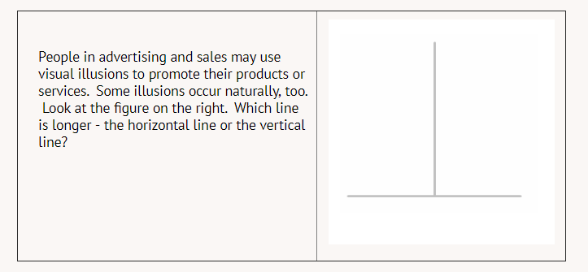
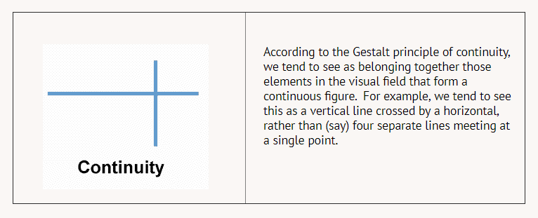

Illusions
Containers often cause people to misjudge the amount of food or beverage they contain. In one example, people were given either a tall narrow glass or a short wide glass. Individuals drinking from one of these types of glasses consumed 25 to 30% more liquid compared to the alternate glass.
Q: Which type of glass encourages higher consumption?
Short wide glasses
Why might a person on a diet care about the size and shape of a glass?
Why might a bartender care about the size and shape of a glass?

